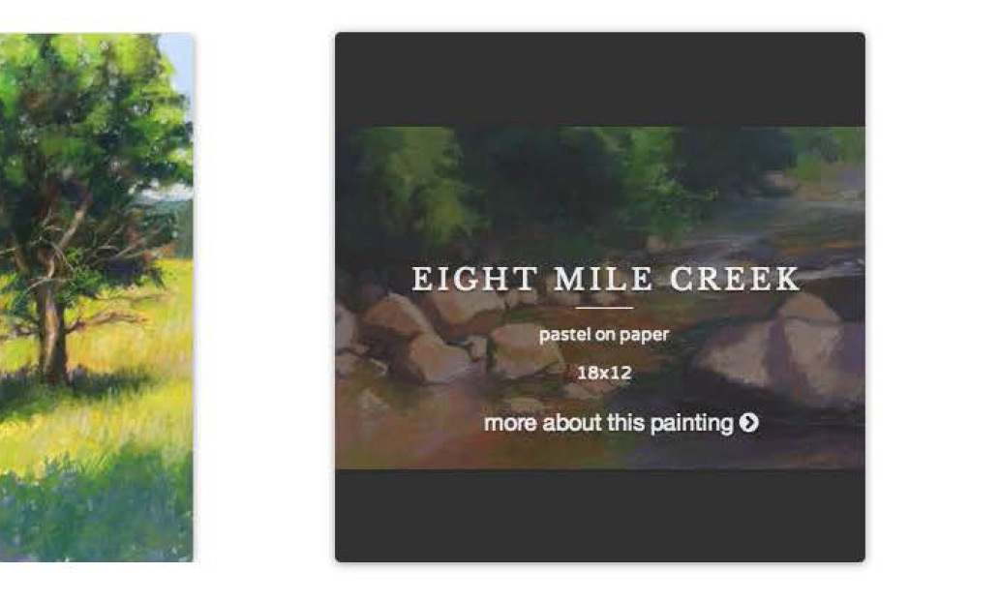
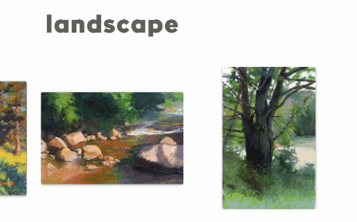

For this project, I focused on creating a site that centered around a single painting medium, pastel.
Pastel is a painting medium that is all about color and visual texture. To highlight that, I used full-width background images to show-off the surface quality of the paintings.
The painting category pages feature a grid of thumbnails. Information about each painting is revealed on hover. The mobile version of the category page stacks the painting information on top of the thumbnail image.
  <When laying out the page, I decided that I wanted to keep the aspect ratio of each painting as opposed to cropping square thumbnails.To keep the grid nice and orderly, I used jQuery to vertically and horizontally center the irregularity sized images.
For the final version of the website, I customized the Twitter Bootstrap Framework.
Jeffrey Smith Pastel makes use of a simple, custom CMS. The website is built dynamically using PHP and a MySQL database to organize the original art work.
up next: